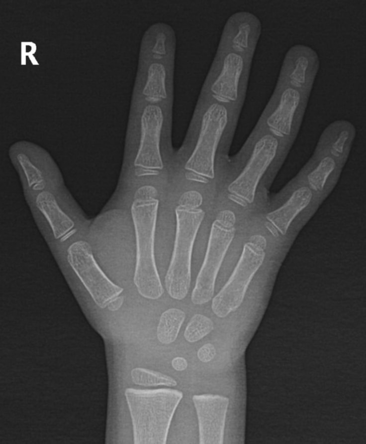

Normal child hand (4 years) — growth platesيد طفل طبيعية (4 سنوات) — صفائح النمو🟢 الصورة الطبيعية

- Lunate (ossification centre) مركز تعظّم العظم الهلالي
- Epiphyses of the heads of the 2nd–5th metacarpals (arrow 1/4) مشاشات رؤوس عظام المشط 2–5
- Epiphyses of the heads of the 2nd–5th metacarpals (arrow 2/4) مشاشات رؤوس عظام المشط 2–5
- Epiphyses of the heads of the 2nd–5th metacarpals (arrow 3/4) مشاشات رؤوس عظام المشط 2–5
- Epiphyses of the heads of the 2nd–5th metacarpals (arrow 4/4) مشاشات رؤوس عظام المشط 2–5
- Capitate (ossification centre) مركز تعظّم العظم الكبير (الرأسي)
- Hamate (ossification centre) مركز تعظّم العظم الكلّابي
- Triquetrum (ossification centre) مركز تعظّم العظم المثلثي
- Distal radial epiphysis المشاشة السفلية لعظم الكعبرة
- Epiphysis at the base of the 1st metacarpal مشاشة قاعدة عظم المشط الأول
الحالة: صورة طبيعية لطفل: صفائح النمو ومراكز التعظّم تبدو كخطوط وفجوات شفافة، وهي ليست كسوراً.
ما يُرى فيها: مراكز تعظّم عظام الرسغ لم يكتمل ظهورها بعد، وصفائح النمو (growth plates) تظهر خطوطاً شفافة عند نهايات العظام؛ لا تُخلط بالكسر.
الوضعية: Frontal (PA) hand